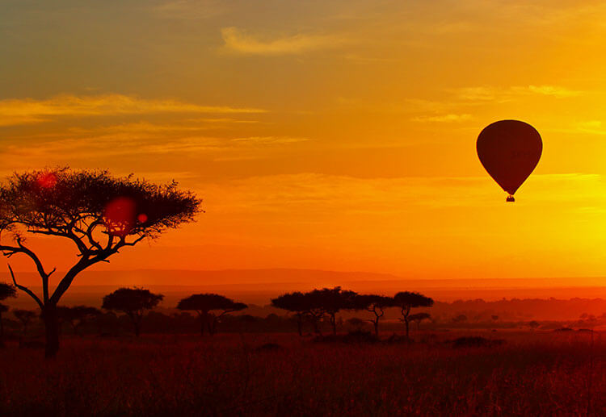

The Maasai Mara National Reserve is Kenya's most celebrated wildlife destination — and for good reason. Stretching across 1,510 square kilometres of open savannah in the Great Rift Valley, the Mara is home to the legendary Big Five: lion, leopard, elephant, buffalo, and rhino. This 3-day escape is designed to give you the full Mara experience — dawn game drives when predators are most active, sundowner drives at dusk, and nights in a comfortable tented camp under an endless African sky.
The highlight of visiting between July and October is the Great Wildebeest Migration — over 1.5 million wildebeest, zebra, and gazelle crossing the Mara River from Tanzania's Serengeti in one of nature's most spectacular events. Your Roameo guide will position you for the best possible sightings throughout your stay.
Depart Nairobi at 7:00am by road (approx. 5–6 hours) or by scheduled light aircraft flight (45 minutes). Arrive at your tented camp, check in, and enjoy lunch. At 4:00pm, head out for your first game drive across the open plains. Watch for lion prides, cheetah, and the vast herds of wildebeest and zebra as the sun turns the savannah golden. Return to camp for dinner under the stars.
Wake at 5:30am for a dawn game drive — the best time to spot predators. Lions often hunt at first light, and leopards are frequently seen returning from nocturnal hunts. Return to camp for a full breakfast. After a midday rest, head back out at 3:30pm for an afternoon drive focused on the Mara River crossing points, where wildebeest gather nervously before plunging into crocodile-filled waters. Optional: sunrise hot air balloon safari (additional cost, bookable on request).
One last early morning drive before breakfast, maximising your time in the reserve. After breakfast, check out of camp and depart for Nairobi. Arrive in Nairobi by early afternoon. Optional visit to a Maasai village en route (additional cost) to learn about traditional culture, beadwork, and community life.